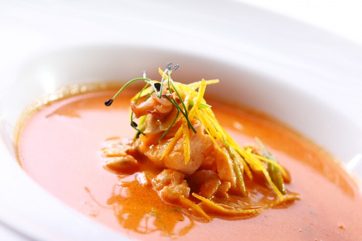

Home
Inschrijven
Recepten
Werkwijze
Login
Zoeken
Recept Chinese Miesoep

Aantal personen
1
6
Ingrediënten
lente-ui
2
wortel
1
rode paprika
1
mie
70
gram
groentebouillon
500
ml
koriander
1
eetlepel
limoensap
1
eetlepel
sojasaus
1
eetlepel
peper en zout naar smaak
Instructies
snij de lente-uitjes in ringen de wortel in reepjes en de paprika in kleine blokjes
doe de mie met groenten in een soepkom en schenk de bouillon erbij laat 5 minuten staan hak de koriander fijn
breng de soep op smaak met peper en zout, bestrooi met koriander en klaar is kees.